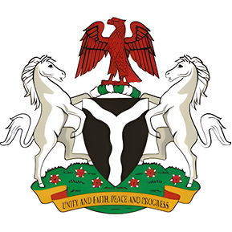

The symbols of Nigeria are not merely administrative markers — they are living expressions of the nation's identity, history and collective aspirations, forged at independence and carried forward by every generation of Nigerians.
Designed by Michael Taiwo Akinkunmi, a 23-year-old student in London who submitted the winning entry in a nationwide competition. It was first hoisted on 1 October 1960 — the moment Nigeria declared independence from British rule.
Nigeria's forests, agricultural wealth and abundant natural resources
Peace and unity among all the peoples of the Federal Republic
Officially adopted on 20 May 1960, the coat of arms is the centrepiece of Nigerian state identity, appearing on all official documents, passports and currency.
Represents Nigeria's fertile soil and the solid, unwavering foundation of the nation. Black also alludes to Nigeria's rich dark earth.
Symbolises the confluence of the River Niger and River Benue at Lokoja — the geographic and spiritual heart of Nigeria.
Crowns the shield as a symbol of strength and national pride. The eagle's soaring posture represents Nigeria's rising potential.
White horses flanking the shield on both sides, representing dignity and the noble, steadfast character of the Nigerian people.
Yellow Costus spectabilis — Nigeria's national flower — representing the country's natural beauty and abundant flora.

“Unity and Faith, Peace and Progress”
Originally composed by Lillian Jean Williams circa 1960, the anthem was restored by Act of the National Assembly and re-adopted on 29 May 2024, replacing “Arise O Compatriots” which had served since 1978.
Nigeria, we hail thee,
Our own dear native land,
Though tribe and tongue may differ,
In brotherhood we stand,
Nigerians all, and proud to serve
Our sovereign Motherland.
Our flag shall be a symbol
That truth and justice reign,
In peace or battle honour’d,
And this we count as gain,
To hand on to our children
A banner without stain.
O God of all creation,
Grant this our one request,
Help us to build a nation
Where no man is oppressed,
And so with peace and plenty
Nigeria may be blessed.
Recited every morning in schools across Nigeria and at national ceremonies, the pledge is a personal covenant between each citizen and the country they call home. It was written by Felicia Adeyoyin and adopted in 1978.
I pledge to Nigeria my Country,
To be faithful, loyal and honest,
To serve Nigeria with all my strength,
To defend her unity,
And uphold her honour and glory.
So help me God.
Inscribed on a green band beneath the coat of arms, the national motto encapsulates the four ideals upon which the Federal Republic of Nigeria was built — and toward which every generation strives.
Nigeria's greatest strength lies in the harmonious coexistence of over 250 ethnic groups speaking more than 500 languages. Diversity is not a challenge to be managed but a richness to be celebrated — a mosaic that binds rather than divides.
Belief in Nigeria's shared destiny and the collective conviction that the nation's best days are always ahead. Faith calls every Nigerian to contribute to the country's story with optimism and purpose, regardless of present circumstances.
A commitment to resolving disputes through dialogue, upholding the rule of law and nurturing harmony — within the nation's borders and across the African continent and the wider world where Nigeria plays a leading role.
An unwavering drive toward development — economic growth, human flourishing, scientific advancement and the continuous improvement of life for every Nigerian citizen, in every corner of the federation.
Nigeria is a significant player on the international stage, maintaining a vast network of diplomatic missions worldwide.
See More